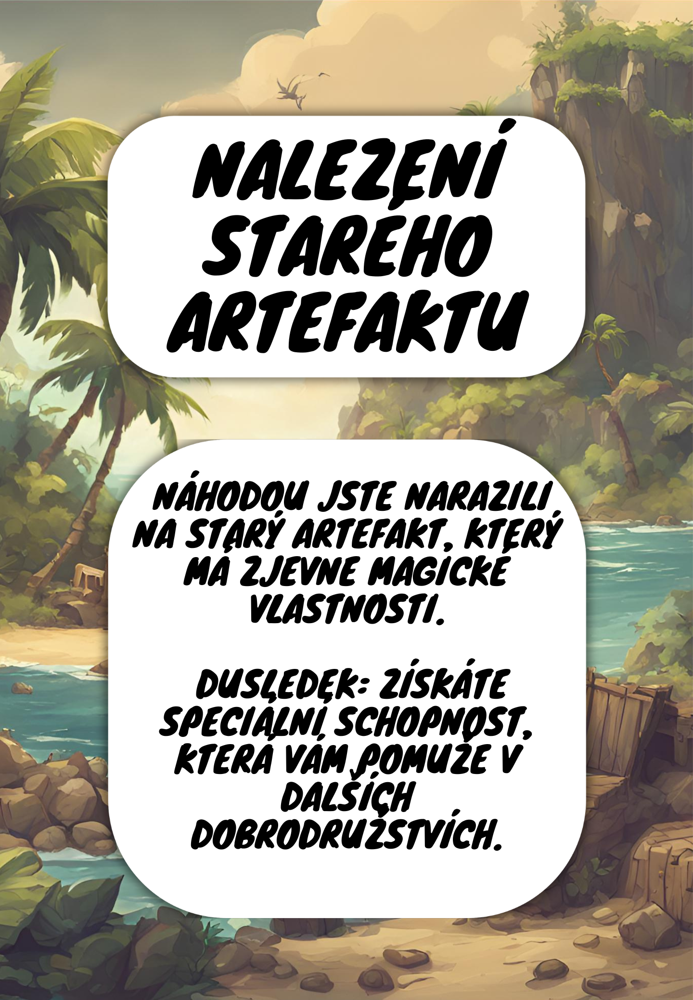

Soubory ke stažení
Menu
Pravidla hry
Soubory ke stažení
Informace
Pro stažení herní plochy klikněte na obrázek mapy (vytisknout pouze jednou)
Pro stažení karet klikněte na obrázky karet (vytisknout alespoň dvakrát každou)

Pro stažení Figurky klikněte na odkaz níže
Papoušek
Opička
Domeček
Bedna